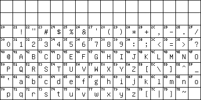

charset=US-ASCII
[TXT]
[BDF]
Nowadays most computers use encodings based on ASCII. The only notable exception are the IBM mainframes that never departed from the myriad of dialects of their Extended Binary Coded Decimal Information Code (EBCDIC) that predated ASCII and gave a more readable BCD coding on paper punch-cards:
But back to ASCII:
Don't let your computer manufacturer tell you that there are ASCII characters beyond those shown above. ASCII uses only 7 bits and allows the most significant eighth bit to be used as parity bit, highlight bit, end-of-string bit (all of which are considered bad practice nowadays) or to include additional characters for internationalization (i18n for which we need 8bit-clean programs that do none of afore-mentioned silly tricks) but ASCII defined no standard for this and many manufacturers invented their own proprietary codepages.
The only languages that can comfortably be written with the repertoire of US-ASCII happen to be Latin, Swahili, Hawaiian and American English without most typographic frills. It is rumoured that there are more languages in the world.
That's why foreign standardizers crafted up national variants of ASCII like the German DIN 66003 which my first CP/M computer (a Sharp MZ-731) used in 1984 to communicate with its daisy wheel printer or the Danish DS 2089 mentioned by Bjarne Stroustrup in § 6.5.3 of his C++ history. These 7bit charsets used the code positions of the less needed ASCII characters
# $ @ [ \ ] ^ ` { | } ~
to insert their accented letters so that
,,schöne Grüße``would get encoded as
,,sch|ne Gr}~e``and C programs like
{*argv[1]='\0'}
showed up as
æ*argvÆ1Å='Ø0'åbecause C didn't offer alternative digraphs like Pascal's (. for [ and (* for {.
This is how these national variants looked like:
To save space, I have omitted the variants
ASCII and its national variants were declared international standard ISO 646 in 1972. Back then, the socialist countries managed to substitute the international currency sign ¤ for ASCII's capitalist dollar sign $ in the the first international reference version ISO-646-IRV but this was revised in 1991 and now ISO-646-IRV is a synonym for ISO-646-US or US-ASCII as it is used in the core Internet protocols. ISO-646's national variants have fallen out of use because of their obvious problems and because the 8bit ASCII extension ISO-8859-1 has offered a more interoperable standard.
ISO 8859 still isn't the ultimate solution. The even wider Universal Character Set (UCS, Unicode) wants to simplify world-wide multilingual and multi-platform text exchange just like the ASCII standard simplified Latin text interchange and aims to become equally successful as the ultimate encoding standard and thus it was numbered ISO 10646 = ISO 646 + 10000. And the inevitable success seems to be there: RFC 2070 internationalized the Internet's hypertext markup language HTML and declared ISO 10646 its new base charset. RFC 2277 recommends the use of ISO 10646 to all new Internet protocols.
Unicode begins with US-ASCII and ISO-8859-1 but goes beyond the 8bit barrier and encodes all the world's characters in a 16bit space and a 20bit extension zone for everything that did not fit into the 16bit space. The ASCII-compatible Unicode transformation scheme UTF-8 lets all ASCII characters pass through transparently and encodes all other characters as unambiguous 8bit character sequences.
Roman Czyborra
1998-05-24 .. 1998-11-30